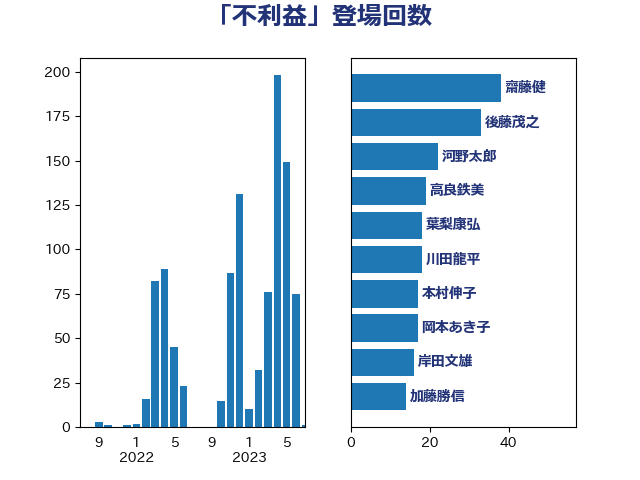

単語「不利益」

| 田村智子 | 日本共産党 | 28 回 |
| 田村憲久 | 自由民主党 | 24 回 |
| 川田龍平 | 立憲民主党 | 19 回 |
| 高良鉄美 | 無所属 | 19 回 |
| 上川陽子 | 自由民主党 | 18 回 |
| 塩川鉄也 | 日本共産党 | 18 回 |
| 井上信治 | 自由民主党 | 16 回 |
| 寺田学 | 立憲民主党 | 8 回 |
| 後藤茂之 | 自由民主党 | 8 回 |
| 田村貴昭 | 日本共産党 | 8 回 |
| 岡本あき子 | 立憲民主党 | 7 回 |
| 武田良太 | 自由民主党 | 7 回 |
| 舩後靖彦 | れいわ新選組 | 7 回 |
| 芳賀道也 | 国民民主党 | 7 回 |
| 萩生田光一 | 自由民主党 | 7 回 |
| 野田聖子 | 自由民主党 | 7 回 |
| 三浦信祐 | 公明党 | 6 回 |
| 塩崎彰久 | 自由民主党 | 6 回 |
| 小泉進次郎 | 自由民主党 | 6 回 |
| 礒崎哲史 | 国民民主党 | 6 回 |
| 若宮健嗣 | 自由民主党 | 6 回 |
| 藤岡隆雄 | 立憲民主党 | 6 回 |
| 音喜多駿 | 日本維新の会 | 6 回 |
| 古川禎久 | 自由民主党 | 5 回 |
| 吉田統彦 | 立憲民主党 | 5 回 |
| 宮崎政久 | 自由民主党 | 5 回 |
| 宮本徹 | 日本共産党 | 5 回 |
| 本村伸子 | 日本共産党 | 5 回 |
| 櫻井周 | 立憲民主党 | 5 回 |
| 丸川珠代 | 自由民主党 | 4 回 |
| 伊藤孝江 | 公明党 | 4 回 |
| 古川俊治 | 自由民主党 | 4 回 |
| 安江伸夫 | 公明党 | 4 回 |
| 小林鷹之 | 自由民主党 | 4 回 |
| 山下芳生 | 日本共産党 | 4 回 |
| 杉尾秀哉 | 立憲民主党 | 4 回 |
| 梶山弘志 | 自由民主党 | 4 回 |
| 緑川貴士 | 立憲民主党 | 4 回 |
| 古屋範子 | 公明党 | 3 回 |
| 堤かなめ | 立憲民主党 | 3 回 |
| 岸田文雄 | 自由民主党 | 3 回 |
| 林芳正 | 自由民主党 | 3 回 |
| 枝野幸男 | 立憲民主党 | 3 回 |
| 森まさこ | 自由民主党 | 3 回 |
| 田村まみ | 国民民主党 | 3 回 |
| 神谷裕 | 立憲民主党 | 3 回 |
| 西村康稔 | 自由民主党 | 3 回 |
| 西村智奈美 | 立憲民主党 | 3 回 |
| 赤嶺政賢 | 日本共産党 | 3 回 |
| 鈴木俊一 | 自由民主党 | 3 回 |
| 青木愛 | 立憲民主党 | 3 回 |
| 三ッ林裕巳 | 自由民主党 | 2 回 |
| 中島克仁 | 立憲民主党 | 2 回 |
| 井坂信彦 | 立憲民主党 | 2 回 |
| 倉林明子 | 日本共産党 | 2 回 |
| 勝部賢志 | 立憲民主党 | 2 回 |
| 古賀之士 | 立憲民主党 | 2 回 |
| 城井崇 | 立憲民主党 | 2 回 |
| 塩村あやか | 立憲民主党 | 2 回 |
| 大塚耕平 | 国民民主党 | 2 回 |
| 平沼正二郎 | 自由民主党 | 2 回 |
| 打越さく良 | 立憲民主党 | 2 回 |
| 梅村聡 | 日本維新の会 | 2 回 |
| 沢田良 | 日本維新の会 | 2 回 |
| 津島淳 | 自由民主党 | 2 回 |
| 浅田均 | 日本維新の会 | 2 回 |
| 浅野哲 | 国民民主党 | 2 回 |
| 田名部匡代 | 立憲民主党 | 2 回 |
| 矢倉克夫 | 公明党 | 2 回 |
| 石垣のりこ | 立憲民主党 | 2 回 |
| 福島みずほ | 社会民主党 | 2 回 |
| 福重隆浩 | 公明党 | 2 回 |
| 稲田朋美 | 自由民主党 | 2 回 |
| 竹谷とし子 | 公明党 | 2 回 |
| 逢坂誠二 | 立憲民主党 | 2 回 |
| 馬淵澄夫 | 立憲民主党 | 2 回 |
| 三原じゅん子 | 自由民主党 | 1 回 |
| 中谷一馬 | 立憲民主党 | 1 回 |
| 中谷真一 | 自由民主党 | 1 回 |
| 伊佐進一 | 公明党 | 1 回 |
| 伊波洋一 | 無所属 | 1 回 |
| 伊藤俊輔 | 立憲民主党 | 1 回 |
| 伊藤孝恵 | 国民民主党 | 1 回 |
| 伊藤渉 | 公明党 | 1 回 |
| 佐々木さやか | 公明党 | 1 回 |
| 吉田はるみ | 立憲民主党 | 1 回 |
| 國重徹 | 公明党 | 1 回 |
| 大串博志 | 立憲民主党 | 1 回 |
| 大口善徳 | 公明党 | 1 回 |
| 大西健介 | 立憲民主党 | 1 回 |
| 安達澄 | 無所属 | 1 回 |
| 宮本周司 | 自由民主党 | 1 回 |
| 小宮山泰子 | 立憲民主党 | 1 回 |
| 小沢雅仁 | 立憲民主党 | 1 回 |
| 山口那津男 | 公明党 | 1 回 |
| 山岸一生 | 立憲民主党 | 1 回 |
| 山本博司 | 公明党 | 1 回 |
| 岡本三成 | 公明党 | 1 回 |
| 岬麻紀 | 日本維新の会 | 1 回 |
| 岸信夫 | 自由民主党 | 1 回 |
| 岸真紀子 | 立憲民主党 | 1 回 |
| 平井卓也 | 自由民主党 | 1 回 |
| 後藤祐一 | 立憲民主党 | 1 回 |
| 志位和夫 | 日本共産党 | 1 回 |
| 斎藤嘉隆 | 立憲民主党 | 1 回 |
| 斎藤洋明 | 自由民主党 | 1 回 |
| 新妻秀規 | 公明党 | 1 回 |
| 末松信介 | 自由民主党 | 1 回 |
| 杉田水脈 | 自由民主党 | 1 回 |
| 松山政司 | 自由民主党 | 1 回 |
| 松島みどり | 自由民主党 | 1 回 |
| 松野博一 | 自由民主党 | 1 回 |
| 柚木道義 | 立憲民主党 | 1 回 |
| 柳ヶ瀬裕文 | 日本維新の会 | 1 回 |
| 柴田巧 | 日本維新の会 | 1 回 |
| 森屋隆 | 立憲民主党 | 1 回 |
| 森本真治 | 立憲民主党 | 1 回 |
| 橘慶一郎 | 自由民主党 | 1 回 |
| 櫻井充 | 自由民主党 | 1 回 |
| 浜田聡 | NHK党 | 1 回 |
| 清水真人 | 自由民主党 | 1 回 |
| 渡辺周 | 立憲民主党 | 1 回 |
| 漆間譲司 | 日本維新の会 | 1 回 |
| 玉木雄一郎 | 国民民主党 | 1 回 |
| 田中健 | 国民民主党 | 1 回 |
| 石橋通宏 | 立憲民主党 | 1 回 |
| 稲津久 | 公明党 | 1 回 |
| 笠井亮 | 日本共産党 | 1 回 |
| 羽田次郎 | 立憲民主党 | 1 回 |
| 菅義偉 | 自由民主党 | 1 回 |
| 藤井比早之 | 自由民主党 | 1 回 |
| 西田実仁 | 公明党 | 1 回 |
| 谷田川元 | 立憲民主党 | 1 回 |
| 近藤昭一 | 立憲民主党 | 1 回 |
| 道下大樹 | 立憲民主党 | 1 回 |
| 金子恵美 | 立憲民主党 | 1 回 |
| 門山宏哲 | 自由民主党 | 1 回 |
| 階猛 | 立憲民主党 | 1 回 |
| 青柳仁士 | 日本維新の会 | 1 回 |
| 高村正大 | 自由民主党 | 1 回 |
| 高橋千鶴子 | 日本共産党 | 1 回 |